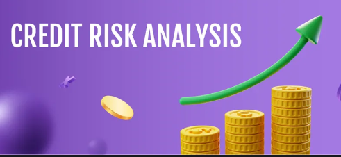
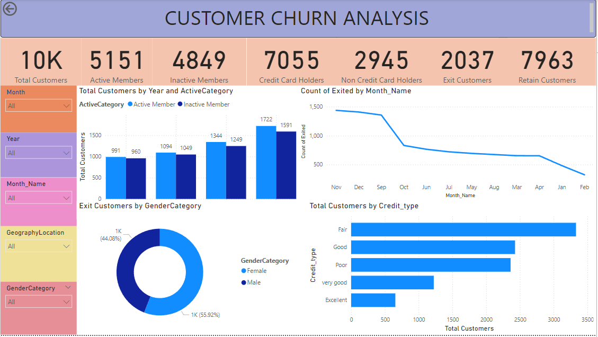
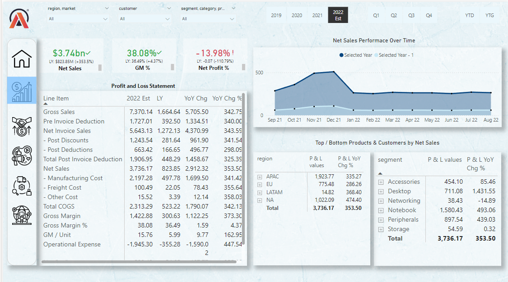
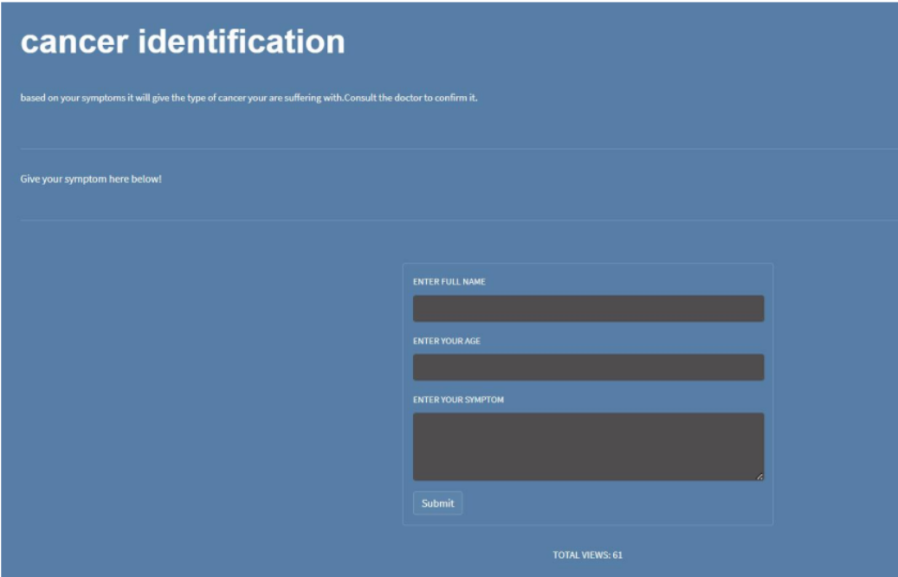

Explore the projects I've worked on.
supervised Learning - Machine Learning
Credit Risk Analysis
and Prediction Using ML

This Credit Risk Analysis and Prediction project predicts loan default probabilities and assigns credit scores using advanced machine learning models. The dataset includes customer demographics, loan details, and credit history. The project focuses on data preprocessing, handling missing values and outliers, as well as scaling and encoding features. Models like Logistic Regression and XGBoost were trained, with SMOTE used to manage class imbalance. Key visualizations include box plots, Sankey diagrams, and heatmaps to understand loan and customer attributes. The model’s performance was evaluated using ROC-AUC scores, and a credit score formula was applied to compute scores. The best-performing model's predictions were saved to a new CSV file for further analysis, providing clear insights into credit risk.
supervised Learning - Machine Learning
Stock Market Risk Analysis and Price Prediction
Using ML
The Stock Market Risk Analysis and Price Prediction project analyzes market risks and forecasts future stock prices using Python. Stock data is gathered via the yfinance library, and the Prophet algorithm is employed for forecasting. Key goals include evaluating risk using metrics like standard deviation (volatility) and Value at Risk (VaR) (potential financial loss over a specific period). The dataset comprises closing prices, returns, and volatility measures from historical stock data. The Prophet model predicts future prices based on patterns and trends. The project was conducted in Deepnote, focusing on understanding stock market variability and predicting price changes, providing actionable insights for investors and analysts. The results offer valuable risk analysis and future stock forecasts to guide investment decisions.
Power BI Application - Data Visualization
Customer Churn Analysis
Using Power BI

This Power BI dashboard provides a comprehensive analysis of customer churn, focusing on essential metrics such as total customers, active members, inactive members, credit card holders, non-credit card holders, exit customers, and retained customers. Designed for user-friendly interaction, it features slicers that allow stakeholders to filter data by month, year, geography, and gender category. Key visualizations include a clustered column chart to show customer trends by year and active category, a donut chart for analyzing exit customers by gender, a line plot detailing the count of exited customers by month, and a clustered bar chart representing total customers by credit type. This dashboard serves as a valuable tool for businesses to identify churn patterns, analyze customer engagement, and develop effective retention strategies.
Power BI Application - Data Visualization
Market and Supply Chain Dashboard
Using Power BI

This project showcases a Power BI dashboard developed to deliver comprehensive insights into Market and Supply Chain performance within the Business Insights 360 tool. The dashboard provides key metrics such as Net Sales, Gross Margin, Profitability, Forecast Accuracy, and Risk Profiles. These insights can be segmented by products, customers, time periods, regions, and categories, helping users assess performance at granular levels. The dashboard features visualizations like P&L statements, Growth Matrices, and Risk Assessment Tools to assist in decision-making. Through these insights, businesses can optimize marketing efforts, enhance supply chain efficiency, reduce risks, and identify growth opportunities. This tool helps ensure accurate forecasting, better customer segmentation, and data-driven strategy development.
supervised Learning - Machine Learning
Fake News Detection
Using Machine Learning
This project is dedicated to developing a fake news detection system that leverages machine learning techniques to effectively differentiate between authentic and misleading information. The primary goal is to create a robust model that can accurately classify news articles as real or fake by utilizing a diverse dataset composed of both genuine and false news stories. Key features of the project include dataset integration, where various datasets are merged to create a comprehensive training and testing set. Text data is converted into numerical features using the TF-IDF (Term Frequency-Inverse Document Frequency) vectorization method, essential for machine learning algorithms. Additionally, the project addresses class imbalance issues using the Synthetic Minority Over-sampling Technique (SMOTE) to ensure balanced model training. Model pipelines are constructed to streamline the evaluation of different machine learning algorithms, integrating preprocessing, model training, and prediction for systematic experimentation. Performance metrics such as accuracy, F1-score, and confusion matrices are utilized to assess model performance and guide the refinement process, ultimately ensuring the selection of the most effective model for detecting instances of fake news.
Natural Language Processing (NLP) - Machine Learning
Cancer Detection
Using NLP

The Cancer Detection using NLP with Streamlit project is an innovative application aimed at facilitating early cancer detection based on user-reported symptoms. Leveraging the computational power of Google Colab, the model is trained using a dataset scraped from cancer.net, which undergoes preprocessing to create a symptom-feature matrix for the Multinomial Naive Bayes classifier. Once trained, the model is serialized with the pickle library and integrated into a user-friendly Streamlit interface. Users input their symptoms, prompting the application to load the pre-trained model and predict the most likely type of cancer associated with those symptoms. This seamless integration allows users to access critical health insights quickly and efficiently, empowering them with vital information that can lead to earlier diagnoses and improved treatment outcomes.
supervised Learning - Machine Learning
EDA
On Indian Crude Oil Prices
The Exploratory Data Analysis (EDA) on Indian crude oil prices project comprehensively examines trends in data from the Petroleum Planning and Analysis Cell (PPAC) spanning 2000 to 2020. Key features include analyzing basic statistics and distributions of crude oil prices using matplotlib for visualizations such as line plots, histograms, and box plots. Interactive visualizations are created with plotly.express for deeper insights into price movements. The study segments data into periods before and after significant events, like the COVID-19 pandemic, to analyze price fluctuations. Additionally, it explores correlations between crude oil prices and economic indicators, including GDP growth and inflation rates. To start, set up the necessary libraries and run the EDA script to uncover patterns in the dataset.